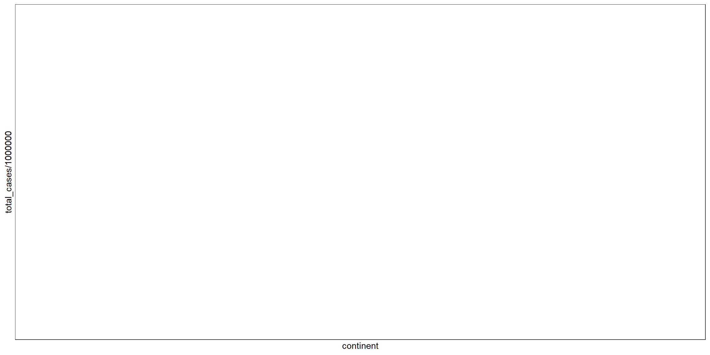
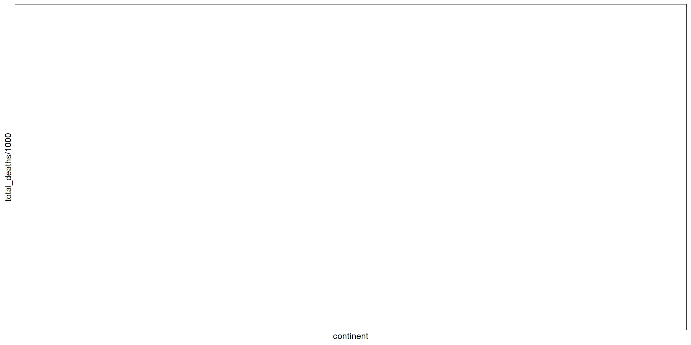
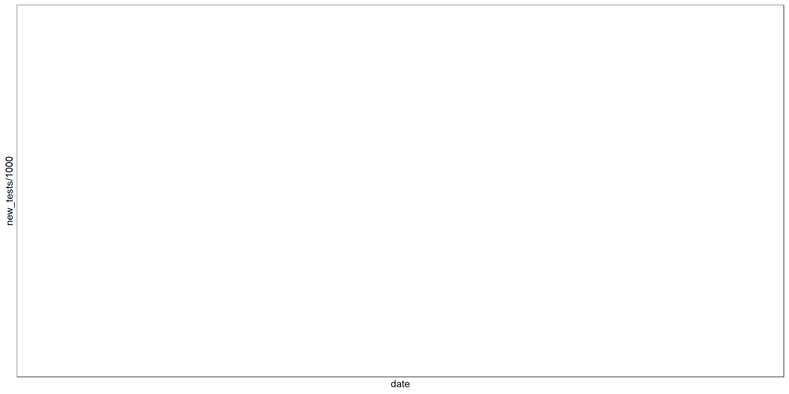

Our World in Data
my_wrangle <- function(df){
df %>% summarise(total_cases = sum(total_cases),
total_deaths = sum(total_deaths),
total_tests = sum(total_tests),
new_cases = sum(new_cases),
new_deaths = sum(new_deaths),
new_tests = sum(new_tests),
.groups = "keep")
}continent <- owid %>%
group_by(continent, date) %>%
my_wrangle()
yesterday_continent <- continent %>%
filter(date >= week)
world <- owid %>%
group_by(date) %>%
my_wrangle()
yesterday_world <- world %>%
filter(date >= week) Relationship with Continents
Cases
ggplot(data = continent, aes(x = date, y = total_cases/1000, color = continent)) +
geom_line() + theme_bw()
This plot shows how total cases have increased over time colored by continent. I divided total cases by one thousand so it’s per one thousand cases.
ggplot(data = continent, aes(x = continent, y = total_cases/1000000, fill = continent)) +
geom_col() + theme_bw()
This plot shows total over all cases by continent. I divided total cases by one million so it’s per one million cases.
ggplot(data = continent, aes(x = date, y = new_cases/1000, color = continent)) +
geom_line() + theme_bw()This plot shows new cases each day colored by continent. I divided new cases by one thousand so it’s per one thousand cases.
Deaths
ggplot(data = continent, aes(x = date, y = total_deaths/1000, color = continent)) +
geom_line() + theme_bw()This plot shows how total deaths have increased over time colored by continent. I divided total deaths by one thousand so it’s per one thousand deaths.
ggplot(data = continent, aes(x = continent, y = total_deaths/1000, fill = continent)) +
geom_col() + theme_bw()
This plot shows total over all deaths by continent. I divided total deaths by one thousand so it’s per one thousand deaths.
ggplot(data = continent, aes(x = date, y = new_deaths/100, color = continent)) +
geom_line() + theme_bw()This plot shows new deaths each day colored by continent. I divided new deaths by one hundred so it’s per one hundred deaths.
Tests
ggplot(data = continent, aes(x = date, y = total_tests/1000000, color = continent)) +
geom_line() + theme_bw()
This plot shows how total tests have increased over time colored by continent. I divided total tests by one million so it’s per one million tests.
ggplot(data = continent, aes(x = continent, y = total_tests/1000000, fill = continent)) +
geom_col() + theme_bw()This plot shows total over all tests by continent. I divided total tests by one million so it’s per one million tests.
ggplot(data = continent, aes(x = date, y = new_tests/1000, color = continent)) +
geom_line() + theme_bw()
This plot shows new tests each day colored by continent. I divided new tests by one thousand so it’s per one thousand tests.
Relationship with the World
Cases
This plot shows how total cases have increased over time for the whole world. I divided total cases by one thousand so it’s per one thousand cases.

This plot shows new cases each day for the whole world. I divided new cases by one thousand so it’s per one thousand cases.
Deaths

This plot shows how total deaths have increased over time for the whole world. I divided total deaths by one thousand so it’s per one thousand deaths.

This plot shows new deaths each day for the whole world. I divided total deaths by one hundred so it’s per one hundred deaths.
Tests
This plot shows how total tests have increased over time for the whole world. I divided total tests by one million so it’s per one million cases.

This plot shows new tests each day for the whole world. I divided total tests by one thousand so it’s per one thousand tests.
Data Tables
Continents
yesterday_continent %>%
datatable(caption = 'This Tibble shows COVID-19 data by continents for the last 2 weeks',
class = 'cell-border stripe',
rownames = FALSE,
filter = 'top',
extensions = 'Buttons',
options = list(buttons = c('copy', 'csv', 'pdf'),
pageLength = 5,
autoWidth = TRUE,
dom = 'Bfrtip'))World
yesterday_world %>%
datatable(caption = 'This Tibble shows COVID-19 data for the last 2 weeks in the world',
class = 'cell-border stripe',
rownames = FALSE,
filter = 'top',
extensions = 'Buttons',
options = list(buttons = c('copy', 'csv', 'pdf'),
pageLength = 5,
autoWidth = TRUE,
dom = 'Bfrtip'))## [1] "Last updated: Jul 04 2020"